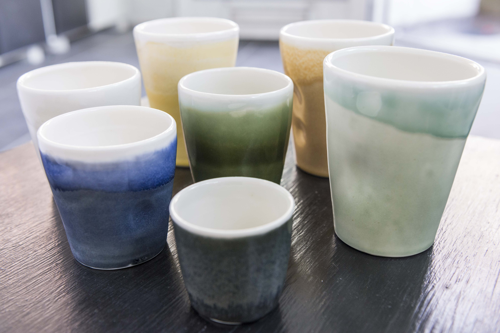
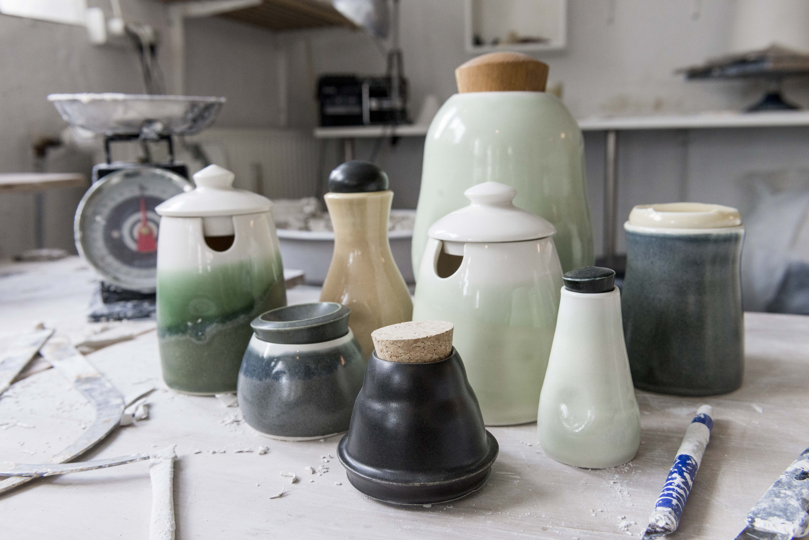
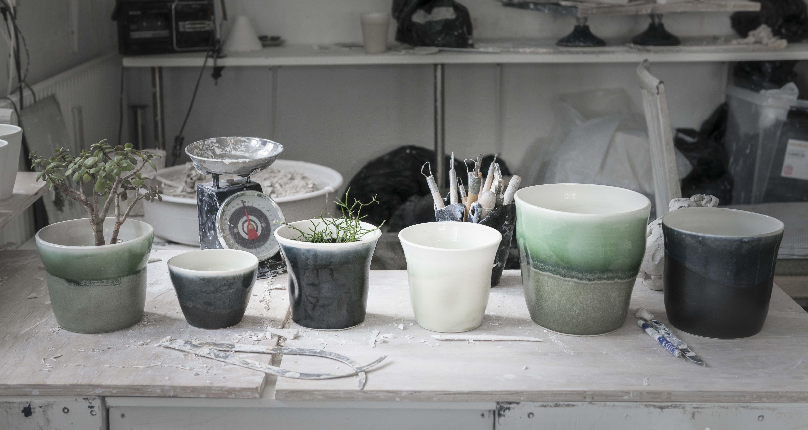
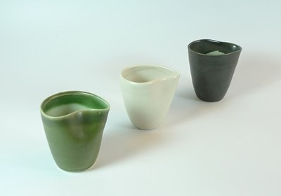

Jeg er født i Lemvig i 1979. I skolen havde jeg en lærer, der gerne brugte lang tid i formningslokalet og interessen for det kunstneriske blev hurtigt vakt.
Senere var jeg i en måneds praktik hos keramiker Anna Bjerre - selvom jeg på det tidspunkt egentlig var mere interesseret i at tegne og male. Men jeg vidste ikke, hvordan jeg skulle komme videre med det. I første omgang blev det Malerskolen på teknisk skole; malingen lugtede svagt af kunst og på det halve år jeg gik der, lærte jeg ikke kun at male lister og vægge, men også en masse om farvelære og stilretninger.
Jeg var klar over, at jeg ikke skulle i malerlære, så jeg tog på HF i Ranum, hvor jeg havde Finn Thybo som inspirerende billedkunstlærer. Her fik jeg åbnet øjnene for en spændende kunstverden.
I 1999 begyndte jeg på Pottemagerskolen i Sønderborg. Jeg var ikke interesseret i at dreje - jeg havde tænkt mig, at jeg udenfor undervisningen kunne lave skulptur. Men jeg blev grebet af drejeskivens uendelige muligheder. Jeg drejede og drejede, til huden var tyndslidt og sengen drejede rundt om mig, når jeg faldt om, om aftenen.
Efter et halvt år, skulle jeg finde en læreplads. Det lykkedes ikke, og jeg flyttede til Århus, hvor jeg for en kort periode læste etnografi. Jeg tænkte, jeg kunne undersøge keramikkens kulturelle betydning eller noget i den retning. Efter kort tid blev jeg enig med mig selv om, at det var bedre at lave keramikken selv.
Jeg begyndte med et halvt år på daghøjskolen Clay Art i Århus. Her lærte jeg at få det kunstneriske ind i keramikken - på pottemagerskolen var det håndværket, det havde drejet sig om. Verdenen af ler åbnede sig og blev uendeligt meget større! Med bagagen fra Clay Art søgte jeg ind på Glas- og Keramikskolen på Bornholm hvor jeg begyndte i 2001.
Igen var det et sandt bombardement af input, metoder, teknikker og muligheder. Vi blev præsenteret for nye arbejdsmetoder, nye indgangsvinkler, nye teknikker. Jeg lærte meget, men var til sidst helt rundtosset og i tvivl om, hvad jeg havde gang i.
I 2003 var jeg, som et led af uddannelsen, i praktik hos Julian Stair i London. Her faldt der mange ting på plads. Jeg lærte om keramikkens baggrund og forstod at det er vigtigt at kende historien, for at kunne sætte sit arbejde i en kontekst. Jeg arbejdede med detaljen og forstod at man ved at fokusere på små forskelle, bedre kan se det store billede. Det var her, jeg lærte hvad det er, at lave kunsthåndværk.
Jeg færdiggjorde min uddannelse på Glas- og Keramikskolen i 2004. De mange input ligger nu i værkstøjskassen som en solid base for nye indgangsvinkler til at arbejde med keramikken. Kort efter min dimission tog jeg tilbage til London for at arbejde for Julian.
I London var jeg omgivet af keramikere på højt niveau og jeg sugede til mig. Julian delte værksted med Edmund de Waal og med hver deres assistenter, tidligere assistenter og andre inspirerende mennesker i nærheden var det et fantastisk sted at være. Jeg hjalp dels Julian med hans arbejde, men udviklede også mine egne ting og jeg begyndte at udstille rundt omkring på messer og gallerier i England.
Efter knap 3 år var jeg klar til at få mit eget og jeg bestemte mig for at tage tilbage til Danmark, hvor jeg fik værksted i Århus. Det har taget mig tid at lande, men efterhånden har jeg fundet mit ståsted.
I 2010 var jeg for første gang med på Collect på Saatchi Gallery i London. Det er en international udstilling, hvor gallerier viser det bedste kunsthåndværk fra hele verden. Jeg var repræsenteret af Cultural Connections CC og denne og efterfølgende internationale udstillinger har udviklet mine arbejder meget. Jeg har bevæget mig fra at lave serier af perfektionerede, funktionelle arbejder, til at lave værker hvor det kunstneriske udtryk er afgørende.
I november 2010 åbnede jeg min egen værkstedsbutik, Formuleret, i en kælder i Jægergårdsgade i Århus. Det at have min egen base har betydet meget. I 2013 kravlede jeg op af kælderen – og min base er blevet endnu bedre. Jeg ser Formuleret som mit formlaboratorium - herfra min verden går, men ikke kun hertil, for jeg har stadig travlt med at udstille på gallerier, udstillinger og markeder; både i Danmark, England og resten af verden.
Jeg har været på en lang rejse, siden det mest kunstneriske jeg synes jeg kunne komme i nærheden af, var håndværksmaler. Dengang havde jeg svært ved at formulere og forstå, hvilken retning jeg ville arbejde i.
Nu sniger arbejdet med leret sig ind i mine tanker om snart sagt alt. Det er en indlevelse og forståelse, som er kommet med fordybelsen i mit arbejde. Nu er jeg kunsthåndværker. Ordet beskriver smukt og præcist, at det både handler om ånd og hånd. Med form, materiale, idé og fordybelse fortæller jeg en historie. Sproget finder jeg i labyrinten af erfaring og nytænkning og ved at høre andres versioner og visioner. De forskellige lag indarbejdes i mine værker, giver dem substans og relevans.